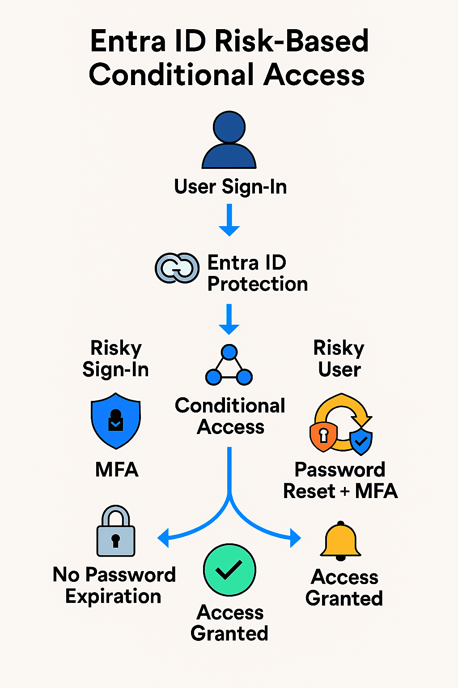

Challenge
With increasing identity-based threats, the organization needed automated protection against risky sign-ins and compromised user accounts. The goal was to deploy Conditional Access policies that enforced MFA and password remediation based on risk signals from Microsoft Entra ID Protection.
Tools & Technologies
- Microsoft Entra ID Protection
- Conditional Access Policies
- Risk Detection Signals (Sign-in Risk, User Risk)
- Microsoft Entra MFA
- Secure Password Change with Password Writeback
Implementation
- Followed Microsoft’s risk policy configuration guidance
- Created Conditional Access policies for sign-in risk and user risk
- Configured sign-in risk policy to require MFA for Medium and High risk levels
- Configured user risk policy to require secure password change and MFA for High risk users
- Excluded emergency access accounts from policy scope to prevent lockout
- Validated remediation flows and monitored policy effectiveness via audit logs
Architecture Diagram
Impact
- Automated remediation of risky sign-ins and compromised accounts
- Reduced exposure to password leaks and identity-based attacks
- Improved security posture with minimal user friction
- Aligned with Microsoft’s recommended identity protection strategy